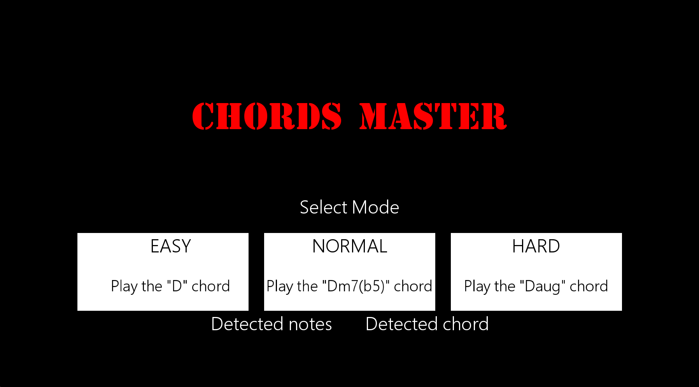
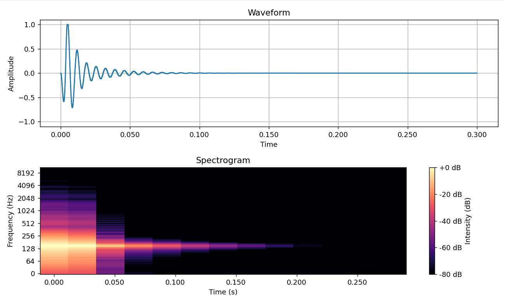
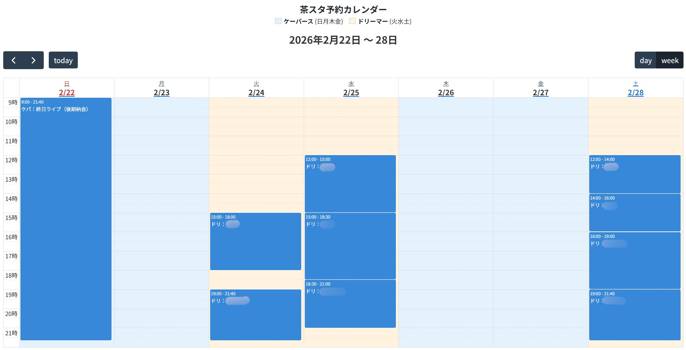
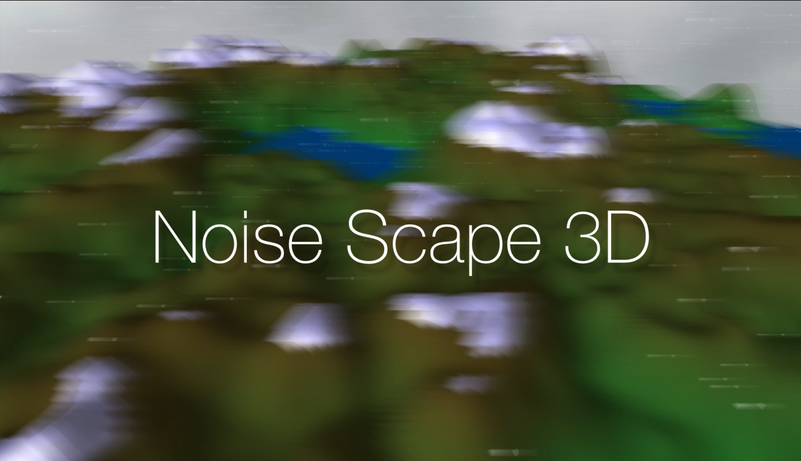

Processing
CHORDS MASTER (2024)
ゲーム感覚でギターコードを学習できるプログラム。
Frontier Media Science Student
明治大学 総合数理学部 先端メディアサイエンス学科 2年
Web・音響処理・3Dグラフィックス・音楽制作

ゲーム感覚でギターコードを学習できるプログラム。

Pythonを用いてドラムマシンの音を解析し、再現するプロジェクト。

サークルのスタジオ予約管理を自動化するシステム。

無限に広がる地形を散策できるインタラクティブ3DCG作品。
授業課題で作成した映像作品。
Studio Oneを使用したオリジナル楽曲制作。作詞・作曲からミックス・マスタリングまですべて行っています。